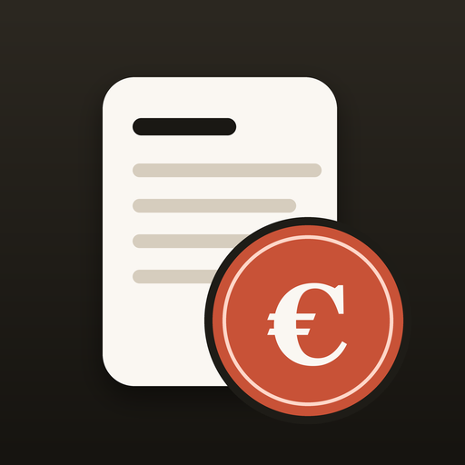

Soporte de Punto Fiscal: nómina y Renta
Esta página es el soporte de la app Punto Fiscal: nómina y Renta, editada por Borja Alventosa Julià. Última actualización: 24 de noviembre de 2026.
Contacto
Escribe a borjawebspubli@gmail.com. Normalmente respondemos en 2-3 días laborables. Para que podamos ayudarte, indica el modelo de iPhone, la versión de iOS y la versión de la app, y qué estabas haciendo. No envíes tu NIF, datos bancarios ni datos personales de terceros.
Si tu consulta es sobre un cobro, una renovación o un reembolso, recuerda que los gestiona Apple (ver las preguntas de más abajo).
Preguntas frecuentes
¿Qué hace Punto Fiscal: nómina y Renta y qué no hace?
Calcula el sueldo neto, el finiquito, la indemnización por despido, el paro y la baja médica, simula la declaración de la Renta y permite consultar convocatorias de ayudas. No presenta declaraciones, no gestiona trámites, no es de la Agencia Tributaria, del SEPE ni de la Seguridad Social, y no es asesoramiento fiscal, laboral ni jurídico. Los resultados son estimaciones orientativas y pueden diferir de tu nómina, de la resolución del SEPE o del borrador oficial de la Renta.
¿Por qué un cálculo necesita conexión a internet?
Los cálculos los hace el servidor de Punto Fiscal (punto-fiscal.com) con los parámetros fiscales vigentes, para que una corrección de la normativa llegue a todos sin actualizar la app. La app envía los datos que escribes en el formulario (importes, fechas y situación personal), sin nombre, correo ni NIF, y muestra el resultado; esos datos no se guardan. Sin conexión la app se abre, pero muestra un error al calcular.
¿Dónde están las fuentes oficiales?
Las normas y los parámetros proceden del BOE, la Agencia Tributaria, el SEPE y la Seguridad Social. Cada resultado muestra los parámetros usados y la app enlaza a las fuentes oficiales. Consulta siempre la fuente oficial vigente.
¿Cómo cambio el consentimiento de anuncios o el seguimiento?
En la app, en Más > Privacidad y legal («Gestionar privacidad de anuncios»). En el iPhone, el permiso de seguimiento está en Ajustes > Privacidad y seguridad > Seguimiento. Si no permites el seguimiento o rechazas el consentimiento, verás anuncios igualmente, pero no personalizados. Ninguna función depende de aceptar el seguimiento, salvo el PDF gratuito a cambio de un anuncio, que requiere el consentimiento de anuncios; con Plus no hace falta.
He visto un anuncio inapropiado. ¿Cómo lo comunico?
Desde Más > Privacidad y legal en la app («Informar de un anuncio inapropiado») o escribiéndonos al correo de contacto, con una captura del anuncio si puedes. Los anuncios están limitados a contenido apto para todos los públicos.
¿Cómo quito los anuncios?
Con la suscripción Punto Fiscal Plus: sin anuncios, PDF, escenarios guardados y la Renta completa, con inversiones. Solo Plus quita los anuncios; la compra única Renta 2026 no los quita. Se compra en la app; el precio lo muestra la App Store antes de confirmar.
¿Cómo restauro mis compras?
Pulsa «Restaurar compras» en la pantalla de compra o en Más, con el mismo Apple ID con el que compraste; hace falta conexión a internet. Un único botón restaura la compra de la Renta y la suscripción Plus. Si no aparece, comprueba que usas el Apple ID correcto y escríbenos con el justificante de Apple (el correo «Recibo de Apple»).
¿Cómo cancelo Punto Fiscal Plus? ¿Y la compra de la Renta?
Plus se cancela en Ajustes del iPhone > tu nombre > Suscripciones > Punto Fiscal > Cancelar suscripción (Apple lo explica en support.apple.com/es-es/118428), al menos 24 horas antes de que termine el periodo en curso. Seguirás teniendo Plus hasta el final del periodo pagado. Desinstalar la app no cancela la suscripción. La compra de la Renta 2026 es un pago único: no se renueva y no hay nada que cancelar.
¿Cómo pido un reembolso?
Los reembolsos los gestiona Apple, no el desarrollador, que no puede emitirlos directamente. Pídelo en reportaproblem.apple.com con tu Apple ID. Es Apple quien decide. Si eres consumidor en la UE, tus derechos legales no se ven limitados: mira las condiciones de las suscripciones y compras.
¿Cómo borro mis datos?
La app no guarda tu nombre, correo ni NIF: guarda tus ajustes, tus elecciones de consentimiento, las preferencias de la app y una copia de las ayudas para verlas sin conexión y, si usas Plus, los escenarios que guardes, y desinstalarla los elimina. Las calculadoras no guardan lo que escribes en el servidor. Si quieres que pidamos a RevenueCat el borrado de tu identificador de compras, escríbenos con la fecha de tu compra. Más detalle en la política de privacidad, sección 14.
¿Qué pasa con la discapacidad y otros datos sensibles?
Solo se usan si decides indicarlos y pulsas calcular, exclusivamente para calcular el resultado que pides, y no se guardan. Puedes calcular sin indicar discapacidad.
Mi resultado no coincide con mi nómina o con el borrador de la Renta. ¿Es un error?
No necesariamente: son estimaciones y tu caso concreto (convenio, retenciones de la empresa, deducciones personales, otras rentas) puede cambiar la cifra. Contrasta con tu nómina o con el borrador oficial. Si crees que hay un error de cálculo, escríbenos con la versión de la app, la calculadora usada y datos de ejemplo (nunca tu NIF) y lo revisaremos.
¿Cómo comunico un error o una sugerencia?
Escribe a la dirección de contacto indicando: modelo de iPhone, versión de iOS, versión de la app, qué calculadora o pantalla usabas, las cifras de ejemplo y qué esperabas que pasara. No envíes tu NIF ni datos personales. La app no envía informes de errores automáticamente, así que no sabremos nada del problema si no nos lo cuentas.